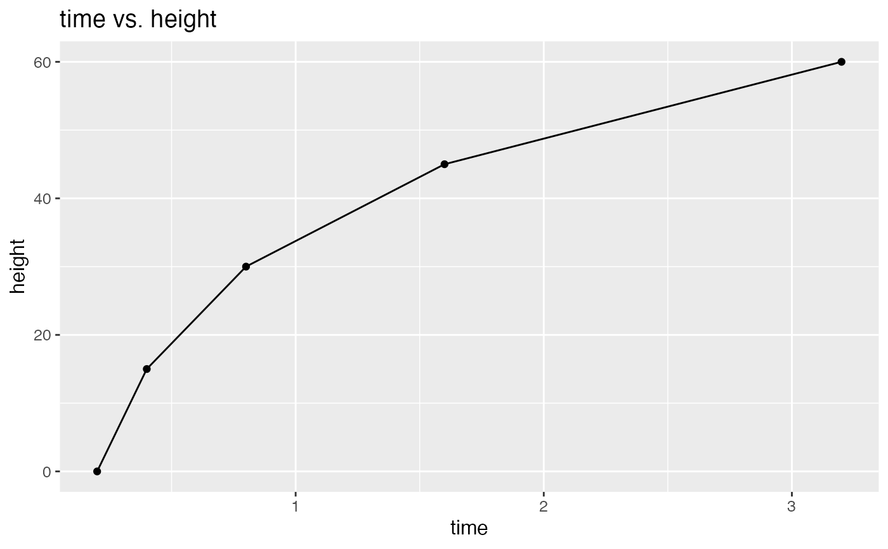

Creates ggplot lineplot through scatterplot points from two numerical columns of a provided dataset. Plot includes x and y axis labels and an optional title. Font size is adjustable. X axis values should not repeat and should be monotomic and unique valued.
create_lineplot(
df,
x,
y,
x_lab = "",
y_lab = "",
title = FALSE,
font_size = 12
)A data frame or tibble
The montomic numerical column series within df to be on the x-axis
The numerical column within df to be on the y-axis
A string for x-axis label if required. Default is "" (no axis label).
A string for y-axis label if required. Default is "" (no axis label).
A boolean response if title should be included. Title is a concatenation of axis labels. Default is FALSE
Size of the font used in the lineplot. Default is 12.
A ggplot lineplot with points. The lineplot should have points corresponding to the coordinates of the continuous numerical columns inputted into the funtion. A line should pass through the points. The x and y axis labels with show if a label is specified. The title should be a concatenation of axis labels if set as TRUE.
data = data.frame("time" = c(0.2, 0.4, 0.8, 1.6, 3.2),
"height" = c(0, 15, 30, 45, 60))
create_lineplot(df = data, x = time, y = height,
x_lab = "time", y_lab = "height",
title = TRUE, font_size = 13)
